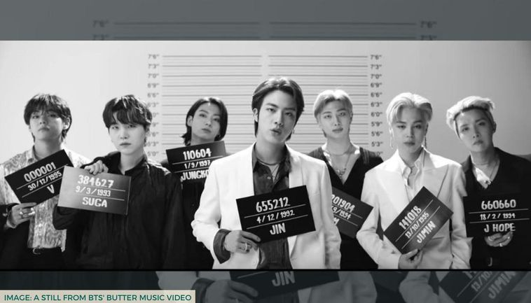
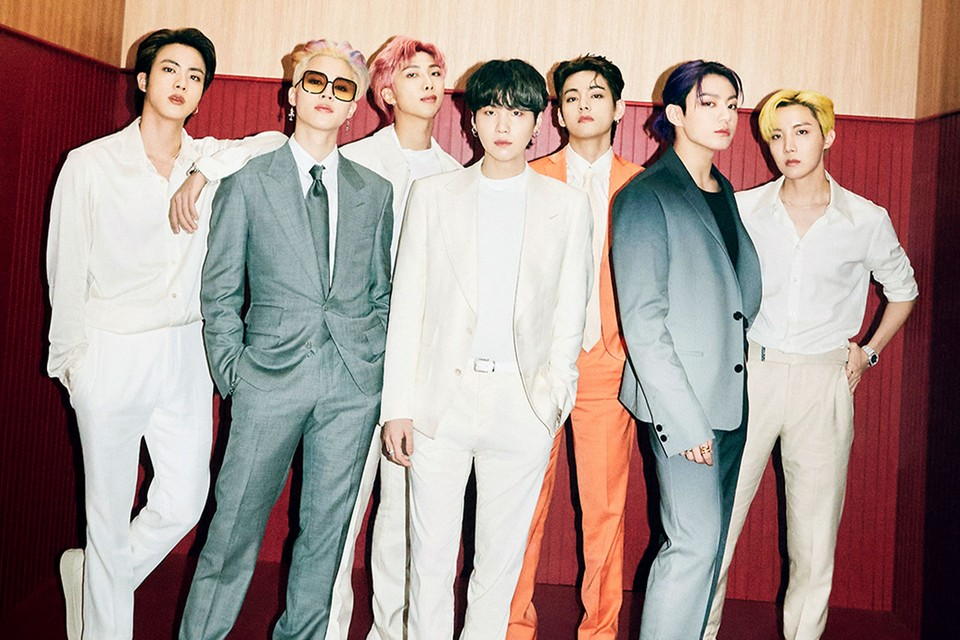
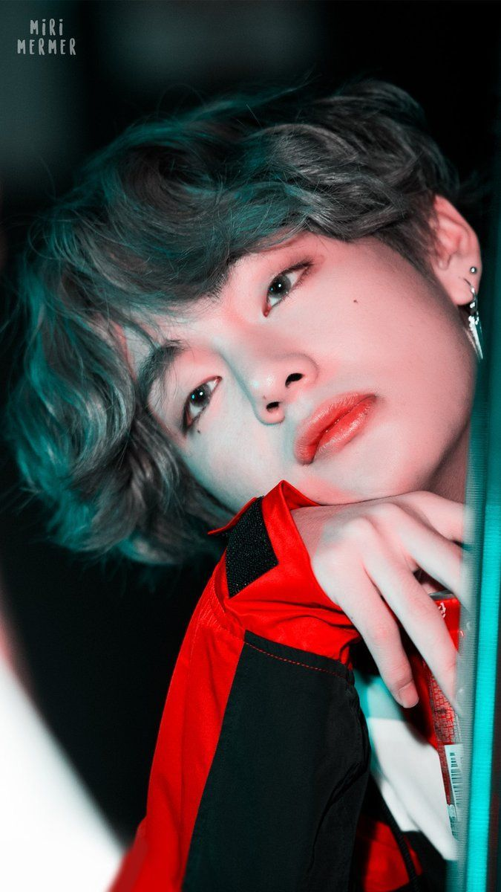
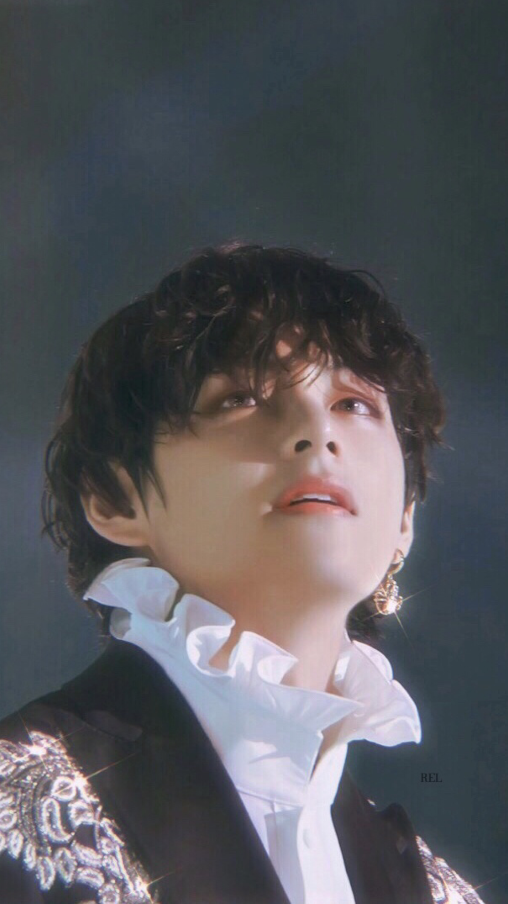
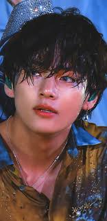

BTS,njohur gjithashtu si Bangtan Boys, është një grup i përbërë nga shtatë anëtarë: RM, JIN, SUGA, J-HOPE, JIMIN, V and JUNGKOOK, formuar në Seul, Korea e Jugut në 2010. Ata debutuan fillimisht si një grup hip hop, megjithëse me kalimin e kohës stili i tyre muzikor ka evoluar duke përfshirë një gamë të gjerë të zhanreve muzikore. Tekstet e tyre, janë në përgjithësi të përqendruara shpesh në historitë e tyre personale dhe përfshijnë tema që kanë të bëjnë me shëndetin mendor, problemet e adoleshentëve dhe të rinjëve rreth të 20-ave, humbjet dhe fitoret, udhëtimin drejt të mësuarit si të duash vetveten dhe individualizmin. Puna e tyre përmban referenca nga vepra letrare të ndryshme dhe koncepte psikologjike.

Grupi fillimisht u formua nga kompania Big Hit Entertainment dhe publikuan albumin e tyre të parë, 2 Cool 4 Skool (2013).Arritjet pasuese, siç janë debutimi i tyre i parë në Billboard 200 në SHBA The Most Beautiful Moment in Life, Part 1 (2015), The Most Beautiful Moment in Life: Young Forever (2016), dhe Wings (2016) ndihmuan në vendosjen e reputacionit të BTS si një grup i ndërgjegjshëm shoqëror. Wings u bë albumi i parë i BTS që shiti një milion kopje në Korenë e Jugut. Në vitin 2017, BTS kaloi në tregun ndërkombëtar të muzikës, vecanërisht në SHBA duke thyer rekorde të shumta shitjesh, dhe duke u bërë grupi i parë Korean që u çertifikua nga Shoqata e Industrisë së Regjistrimit të Amerikës (RIAA) për këngën e tyre "Mic Drop ". BTS është grupi i parë Korean që kryesoi Billboard 200 me albumin e tyre Love Yourself: Tear (2018). Qē nga ajo kohë, ata kanë arritur në krye të listave të SHBA-së me albumet e tyre Love Yourself: Answer (2018), Map of Soul: Persona (2019) dhe Map of Soul: 7 (2020), duke e bërë kështu BTS grupin më të shpejtë që nga Beatles për të fituar katër albume me numër një, në më pak se dy vite.
"Dynamite" është kënga e shtatë dixhitale (kënga e parë krejt angleze) nga BTS. Eshtë publikuar në 21 Gusht, 2020, në 1 PM KST. Një remix EDM dhe një remix akustike u lançuan më 24 gusht, 2020, gjithashtu një remiks tropikal dhe një remix buzë pishinës u lëshuan më 28 gusht, 2020.Më 17 shtator, 2020, versioni i zgjeruar i këngës është hequr dhe versioni Deluxe është riemëruar në "DayTime Version". Një "NightTime Version" u lançua më 18 shtator, 2020 duke shfaqur remixe të ngadalta, dhomë gjumi, retro dhe mesnate.Më vonë kënga u shtua si pjesa e tetë dhe e fundit në mini albumin e tyre të shtatë BE. Duket gjithashtu si titulli bonus i trembëdhjetë në diskun një për albumin e tyre të katërt përmbledhës japonez BTS, THE BEST.Kjo këngë ka arritur një 610 Perfect All-Kill (PAK) në top listat koreane, më së shumti për çdo këngë.Kënga gjithashtu debutoi dhe u rendit për dy javë në # 1 në Billboard Hot 100, duke shënuar BTS si aktin e parë Koreane në histori që kryeson listën për tre javë. Grupi më pas mban vendin # 2 në tabelë për katër javë të tjera.Më 28 shtator, 2020, BTS bëhet akti i parë që kryeson Hot 100, Global 200 dhe Global 200 duke përjashtuar listat e SH.B.A.-së në të njëjtën kohë.Më 12 Prill 2021, videoja muzikore për Dynamite arriti në 1 miliard shikime në YouTube.
| Events | Nomination |
| Grammy Award | Best Pop Duo/Group Performance |
| Golden Disc Award | Digital Song |
| Mnet Asian Music Award | Sond of the year |
| MTV Europe Music Award | Best Song |
| Kids'Choice Award | Favourite Song |
| People's Choice Award | Favourite Music Video |
| MTV Europe Music Award | Best Dance Performance |
| People's Choice Award | Favourite Song |
| iHeartRadio Music Award | Favourite Music Video Choreography |
| iHeartRadio Music Award | Best Music Video |
BTS Butter: A Flirty Track That Oozes With The Septet's Creamy Moves And Vocals
BTS më në fund ka publikuar këngën e tyre shumë të pritur, Butter. Butter është kënga e dytë e plotë ne anglisht e grupit K-pop dhe u lançua vetëm pak orë më parë. Butter eshte nje zhaner ndryshe krahasuar me kengen Dynamite te grupit te publikuar ne gusht te vitit te kaluar. Këtu është një përmbledhje e hollësishme në lidhje me këngën që ka pushtuar internetin në kaq pak kohë.
 BTS’ Butter compliments its catchy lyrics with its impeccable dance moves. The styling of the group and the sets are the cherry on top. Whether the boys are dressed to the T in formals or being ready to sweat it out in a basketball court, each scene matches the vibe of the song. So to conclude this dance track's review, one has to say: The hair colours have changed but BTS' potential to produce a hit single remains untouched.
Lyric:
Smooth like butter Like a criminal undercover Gon' pop like trouble Breakin' into your heart like that (Ooh)
Cool shade stunner Yeah, I owe it all to my mother Hot like summer Yeah, I'm makin' you sweat like that Break it down
Oh, when I look in the mirror I'll melt your heart into two I got that superstar glow so (Ooh)
Do the boogie like
Side step, right, left to my beat High like the moon, rock with me, baby
Know that I got that heat Let me show you 'cause talk is cheap
Side step, right, left to my beat Get it, let it roll
Smooth like butter Pull you in like no other Don't need no Usher To remind me you got it bad
Ain't no other That can sweep you up like a robber Straight up, I got ya Makin' you fall like that Break it down
Oh, when I look in the mirror I'll melt your heart into two I got that superstar glow so (Ooh)
Do the boogie like
Side step, right, left to my beat High like the moon, rock with me, baby
Know that I got that heat Let me show you 'cause talk is cheap
Side step, right, left to my beat Get it, let it roll
Get it, let it roll Get it, let it roll
Ice on my wrist, I'm the nice guy Got the right body and the right mind Rollin' up to party, got the right vibe Smooth like (Butter), hate us (Love us)
Fresh boy pull up and we lay low All the playas get movin' when the bass low Got ARMY right behind us when we say so Let's go
Side step, right, left to my beat High like the moon, rock with me, baby
Know that I got that heat Let me show you 'cause talk is cheap
Side step, right, left to my beat Get it, let it roll
Smooth like (Butter), cool shade (Stunner) And you know we don't stop Hot like (Summer), ain't no (Bummer) You be like oh, my God
We gon' make you rock and you say (Yeah) We gon' make you bounce and you say (Yeah) Hotter? Sweeter! Cooler? Butter! Get it, let it roll
Mirë, kjo dëshmon se fansat e Taehyung nuk janë të vetmit që e gjejnë te pashem këngëtarin e BTS. V është shpallur si njeriu më i pashëm i vitit 2020 në të gjithë botën nga kanali YouTube "Top 10 World".Djali Bangtan u ndesh me disa yje ndërkombëtarë. Këtu përfshihen aktori Bollywood Hrithik Roshan, aktori Batman Robert Pattinson, ylli Avengers: Endgame Chris Evans, ish këngëtari i One Direction Zayn Malik,Chris Hemsworth si dhe Tom Cruise. Ndërsa V zuri vendin e parë, Zayn ndoqi këngëtarin në vendin e dytë ndërsa ylli i Twilight Pattinson përfundoi ne vend te trete.
  Albumet ndër vite: